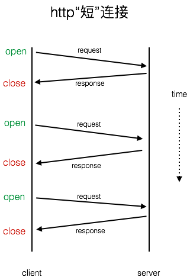
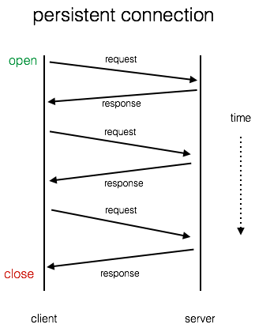
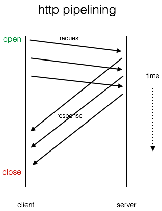
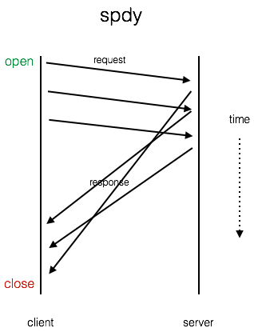

http大致经历了0.9、1.0、和现在我们用的1.1三个重要的版本。
每请求一次，重新建立连接（“短连接”）
http0.9 大概是1991年发布的，只支持get请求，基本只支持下载html文档，其实这是可以理解的。早在10多年前，我们用的是拨号上网，那网速真可称得上龟速。那时我们的网页是啥样的呢，大概跟以前塞班上的wap页面差不多，估计还要差一点。wap页面可以有图片了，而http0.9的那个年代能把文档下载下来就差不多了。我们重点关注http0.9时的连接，短连接模型如图所示：

由此模型可见，假如我们要请求两个资源文件a和b，那么必须建立两次连接。（但基本上http0.9下一个页面没有太多资源需要下载，这里只是作为一个例子讲解）。
HTTP persistent connection（“长连接”）
到了http1.0，这个时候加入了post等方式，网页可以与后端进行交互了。在http1.0前期，我们依然采用的是“短连接”。但与此同时我们的网络建设发展迅速，网页逐渐变得庞大起来，已经不再是只有文档了，还包括其它资源：图片，脚本，样式等等。并且在一个页面里面，这些资源越来越多。要知道tcp建立连接从性能和时间上是有损耗的，tcp建立连接时光三次握手就是一个很大的时间损耗，还有一个大问题tcp slow start (简单解释为了防止网络阻塞等原因，传输时先传输较小的包，然后逐渐增大传输包的大小，最后达到一个峰值，这是一个缓慢的过程），还包我们建立了连接要销毁连接等等。所以在http1.0后期有人提出了persistent connection，并在http1.1的时候写入标准。长链接模型如图所示：

http pipelining
虽然http1.1已经有了“长链接“，但是后来人们发现还有可优化的地方。长链接减少了连接创建、销毁、slow start等带来的损耗，但http还有一个大问题，就是每次发起新的请求必须等到上一次请求完毕后才能开始。举个例子，用一个连接请求两张图片，必须a.jpg响应完毕后，才能请求b.jpg，简单理解为请求和响应都是串行的。http为了解决这个问题提出了http pipelining

pipelining技术可以让它们并行发送请求，但是有一点要求，响应必须按发送请求的顺序发回，那么会导致在响应阶段依然会被block住，这个问题专业术语叫Head-of-line blocking(队头阻塞）。百科上讲得有些复杂，其实是pipelining技术要求响应必须按请求顺序返回，要是你第一个请求的响应时间太长（比如是一个大图片），或者丢包等等，那第二个请求的响应就不好处理了，它必须得让第一个请求相应完毕后才能响应。因此后面的响应会被前面的响应卡住。（这里为何设计得如此坑，为何不一步到位解决问题，我理解pipelining只是一个track的方案，在解决问题的同时还必须考虑兼容以前的浏览器等因素，以至于不能一步到位。通过与h2的对比，其实跟协议有很大关系，http1的协议基于文本，h2有一个帧的概念，帧里有一个stream id， 可以把同一个请求流串起来，h1没有这样的设计就有点不好搞了，请参考h2，https://www.jianshu.com/p/51b2a9c98fca）理论上看，http pipelining 应该让http得到部分优化（它至少让请求并行发出去了），但是从实践中数据分析，这项技术并没有让http得到太多提升可参考文章：http://www.guypo.com/http-pipelining-not-so-fast-nor-slow/。 加上在定这项技术标准的时候留给实现者的自由发挥空间太大，导致实现上也是各有不同，而且很复杂。所以现在浏览器基本都是默认关闭这项技术。http://www.guypo.com/http-pipelining-not-so-fast-nor-slow/， 加上在定这项技术标准的时候留给实现者的自由发挥空间太大，导致实现上也是各有不同，而且很复杂。所以现在浏览器基本都是默认关闭这项技术。
google spdy
再后来啊，google看不下去了，认为http确实存在不少问题。于是乎搞了另一种协议spdy, 最开始只在chrome有实现，后来各大浏览器见到这个技术比较牛逼，都加入了进来。spdy对http协议做了很多方面的优化，包括压缩header等等，我们这里只谈spdy对connection作了哪些改进。显然地，跟http pipelining比，它完美解决了队头阻塞问题，以至于http速度得到了非常大的提升。模型如下：

它的请求可以并行发送，响应也可以不依赖请求的顺序返回，所有的都是并行的。
http2
终于说到了重点，后来啊有个牛逼的组织（她们的使命是推进http更快）就在spdy的基础上提出一个正式的规范http2, h2的连接模型跟spdy一样，这里就不多讨论了，关于h2的更深入的讨论将在之后的文章中更新。
参考：
http://www.guypo.com/http-pipelining-not-so-fast-nor-slow/
https://devcentral.f5.com/blogs/us/http-pipelining-a-security-risk-without-real-performance-benefits
http://stackoverflow.com/questions/14810890/what-are-the-disadvantages-of-using-http-pipelining